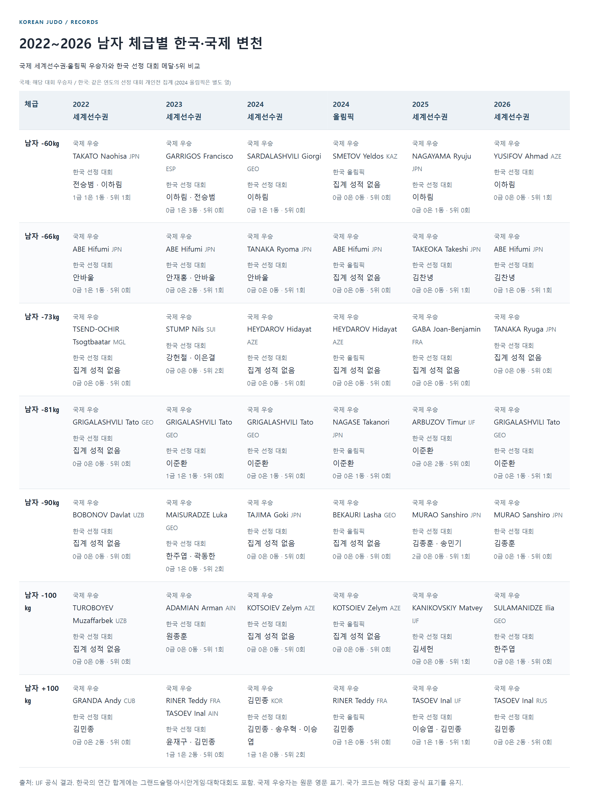
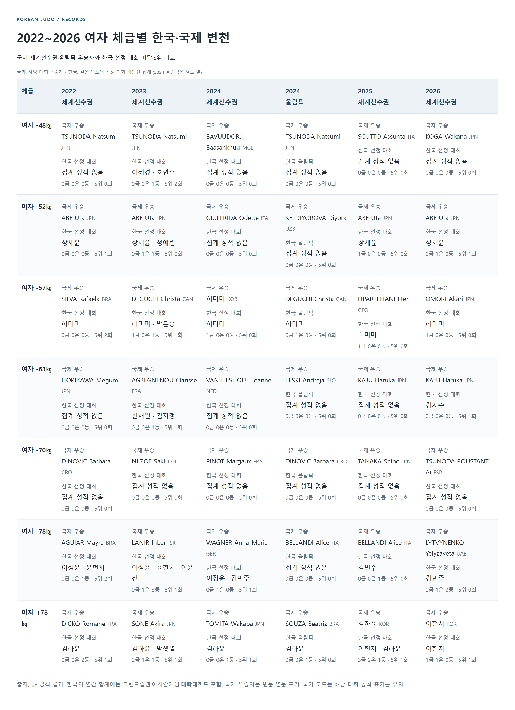
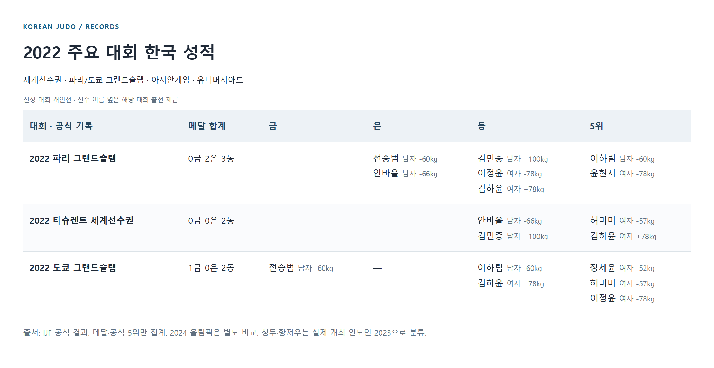
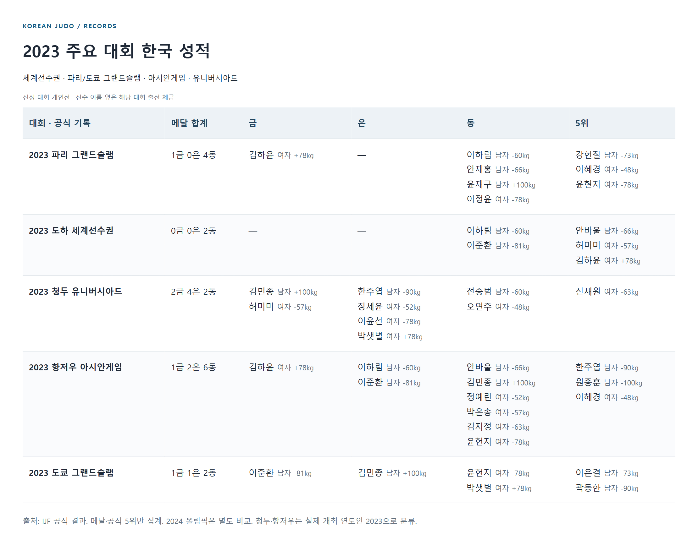
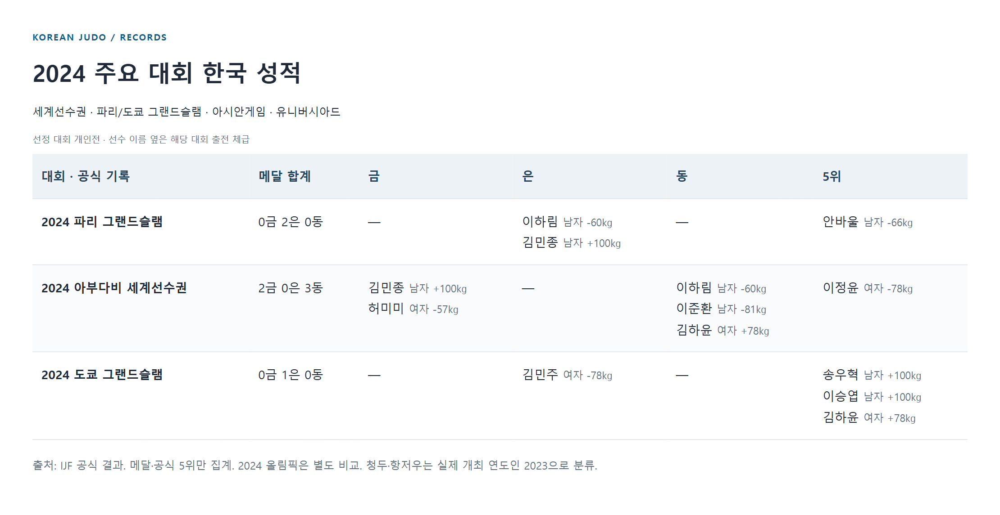
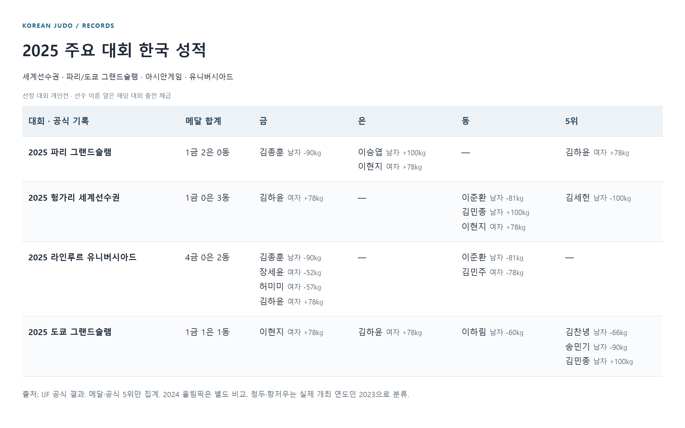
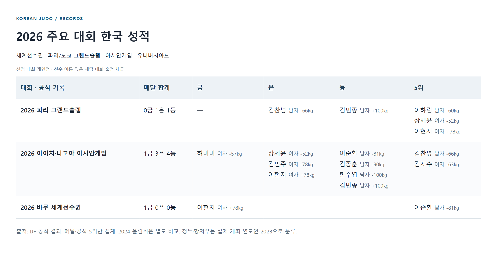

한국 유도 체급별 변천, 2022~2026
2025~2026년 기록을 중심으로 읽기 위한 참고 부록 · 14체급의 한국 성적과 국제 우승자 비교
현재 기록과 평가는 최근 대회 중심 칼럼에서 먼저 읽을 수 있습니다. 이 문서는 과거 흐름을 비교하는 별도 부록입니다.
국제 변천사는 매년 세계선수권과 2024 파리 올림픽의 우승자를 기준으로 비교했다. 한국 변천사는 선정한 세계선수권·파리/도쿄GS·아시안게임·유니버시아드의 메달 및 5위 기록이다. 두 범위가 다르므로 한 셀의 이름이나 메달 수를 같은 난도의 성적으로 환산하지 않는다.
남자 체급별 변천 비교


문자 표로 보기
| 체급 | 2022 세계선수권 | 2023 세계선수권 | 2024 세계선수권 | 2024 올림픽 | 2025 세계선수권 | 2026 세계선수권 |
|---|---|---|---|---|---|---|
| 남자 -60㎏ | 한국 선정 대회 전승범 · 이하림 1금 1은 1동 · 5위 1회 | 한국 선정 대회 이하림 · 전승범 0금 1은 3동 · 5위 0회 | 한국 선정 대회 이하림 0금 1은 1동 · 5위 0회 | 한국 올림픽 집계 성적 없음 0금 0은 0동 · 5위 0회 | 한국 선정 대회 이하림 0금 0은 1동 · 5위 0회 | 한국 선정 대회 이하림 0금 0은 0동 · 5위 1회 |
| 남자 -66㎏ | 한국 선정 대회 안바울 0금 1은 1동 · 5위 0회 | 한국 선정 대회 안재홍 · 안바울 0금 0은 2동 · 5위 1회 | 한국 선정 대회 안바울 0금 0은 0동 · 5위 1회 | 한국 올림픽 집계 성적 없음 0금 0은 0동 · 5위 0회 | 한국 선정 대회 김찬녕 0금 0은 0동 · 5위 1회 | 한국 선정 대회 김찬녕 0금 1은 0동 · 5위 1회 |
| 남자 -73㎏ | 한국 선정 대회 집계 성적 없음 0금 0은 0동 · 5위 0회 | 한국 선정 대회 강헌철 · 이은결 0금 0은 0동 · 5위 2회 | 한국 선정 대회 집계 성적 없음 0금 0은 0동 · 5위 0회 | 한국 올림픽 집계 성적 없음 0금 0은 0동 · 5위 0회 | 한국 선정 대회 집계 성적 없음 0금 0은 0동 · 5위 0회 | 한국 선정 대회 집계 성적 없음 0금 0은 0동 · 5위 0회 |
| 남자 -81㎏ | 한국 선정 대회 집계 성적 없음 0금 0은 0동 · 5위 0회 | 한국 선정 대회 이준환 1금 1은 1동 · 5위 0회 | 한국 선정 대회 이준환 0금 0은 1동 · 5위 0회 | 한국 올림픽 이준환 0금 0은 1동 · 5위 0회 | 한국 선정 대회 이준환 0금 0은 2동 · 5위 0회 | 한국 선정 대회 이준환 0금 0은 1동 · 5위 1회 |
| 남자 -90㎏ | 한국 선정 대회 집계 성적 없음 0금 0은 0동 · 5위 0회 | 한국 선정 대회 한주엽 · 곽동한 0금 1은 0동 · 5위 2회 | 한국 선정 대회 집계 성적 없음 0금 0은 0동 · 5위 0회 | 한국 올림픽 집계 성적 없음 0금 0은 0동 · 5위 0회 | 한국 선정 대회 김종훈 · 송민기 2금 0은 0동 · 5위 1회 | 한국 선정 대회 김종훈 0금 0은 1동 · 5위 0회 |
| 남자 -100㎏ | 한국 선정 대회 집계 성적 없음 0금 0은 0동 · 5위 0회 | 한국 선정 대회 원종훈 0금 0은 0동 · 5위 1회 | 한국 선정 대회 집계 성적 없음 0금 0은 0동 · 5위 0회 | 한국 올림픽 집계 성적 없음 0금 0은 0동 · 5위 0회 | 한국 선정 대회 김세헌 0금 0은 0동 · 5위 1회 | 한국 선정 대회 한주엽 0금 0은 1동 · 5위 0회 |
| 남자 +100㎏ | 한국 선정 대회 김민종 0금 0은 2동 · 5위 0회 | 한국 선정 대회 윤재구 · 김민종 1금 1은 2동 · 5위 0회 | 한국 선정 대회 김민종 · 송우혁 · 이승엽 1금 1은 0동 · 5위 2회 | 한국 올림픽 김민종 0금 1은 0동 · 5위 0회 | 한국 선정 대회 이승엽 · 김민종 0금 1은 1동 · 5위 1회 | 한국 선정 대회 김민종 0금 0은 2동 · 5위 0회 |
여자 체급별 변천 비교


문자 표로 보기
| 체급 | 2022 세계선수권 | 2023 세계선수권 | 2024 세계선수권 | 2024 올림픽 | 2025 세계선수권 | 2026 세계선수권 |
|---|---|---|---|---|---|---|
| 여자 -48㎏ | 한국 선정 대회 집계 성적 없음 0금 0은 0동 · 5위 0회 | 한국 선정 대회 이혜경 · 오연주 0금 0은 1동 · 5위 2회 | 한국 선정 대회 집계 성적 없음 0금 0은 0동 · 5위 0회 | 한국 올림픽 집계 성적 없음 0금 0은 0동 · 5위 0회 | 한국 선정 대회 집계 성적 없음 0금 0은 0동 · 5위 0회 | 한국 선정 대회 집계 성적 없음 0금 0은 0동 · 5위 0회 |
| 여자 -52㎏ | 한국 선정 대회 장세윤 0금 0은 0동 · 5위 1회 | 한국 선정 대회 장세윤 · 정예린 0금 1은 1동 · 5위 0회 | 한국 선정 대회 집계 성적 없음 0금 0은 0동 · 5위 0회 | 한국 올림픽 집계 성적 없음 0금 0은 0동 · 5위 0회 | 한국 선정 대회 장세윤 1금 0은 0동 · 5위 0회 | 한국 선정 대회 장세윤 0금 1은 0동 · 5위 1회 |
| 여자 -57㎏ | 한국 선정 대회 허미미 0금 0은 0동 · 5위 2회 | 한국 선정 대회 허미미 · 박은송 1금 0은 1동 · 5위 1회 | 한국 선정 대회 허미미 1금 0은 0동 · 5위 0회 | 한국 올림픽 허미미 0금 1은 0동 · 5위 0회 | 한국 선정 대회 허미미 1금 0은 0동 · 5위 0회 | 한국 선정 대회 허미미 1금 0은 0동 · 5위 0회 |
| 여자 -63㎏ | 한국 선정 대회 집계 성적 없음 0금 0은 0동 · 5위 0회 | 한국 선정 대회 신채원 · 김지정 0금 0은 1동 · 5위 1회 | 한국 선정 대회 집계 성적 없음 0금 0은 0동 · 5위 0회 | 한국 올림픽 집계 성적 없음 0금 0은 0동 · 5위 0회 | 한국 선정 대회 집계 성적 없음 0금 0은 0동 · 5위 0회 | 한국 선정 대회 김지수 0금 0은 0동 · 5위 1회 |
| 여자 -70㎏ | 한국 선정 대회 집계 성적 없음 0금 0은 0동 · 5위 0회 | 한국 선정 대회 집계 성적 없음 0금 0은 0동 · 5위 0회 | 한국 선정 대회 집계 성적 없음 0금 0은 0동 · 5위 0회 | 한국 올림픽 집계 성적 없음 0금 0은 0동 · 5위 0회 | 한국 선정 대회 집계 성적 없음 0금 0은 0동 · 5위 0회 | 한국 선정 대회 집계 성적 없음 0금 0은 0동 · 5위 0회 |
| 여자 -78㎏ | 한국 선정 대회 이정윤 · 윤현지 0금 0은 1동 · 5위 2회 | 한국 선정 대회 이정윤 · 윤현지 · 이윤선 0금 1은 3동 · 5위 1회 | 한국 선정 대회 이정윤 · 김민주 0금 1은 0동 · 5위 1회 | 한국 올림픽 집계 성적 없음 0금 0은 0동 · 5위 0회 | 한국 선정 대회 김민주 0금 0은 1동 · 5위 0회 | 한국 선정 대회 김민주 0금 1은 0동 · 5위 0회 |
| 여자 +78㎏ | 한국 선정 대회 김하윤 0금 0은 2동 · 5위 1회 | 한국 선정 대회 김하윤 · 박샛별 2금 1은 1동 · 5위 1회 | 한국 선정 대회 김하윤 0금 0은 1동 · 5위 1회 | 한국 올림픽 김하윤 0금 0은 1동 · 5위 0회 | 한국 선정 대회 이현지 · 김하윤 3금 2은 1동 · 5위 1회 | 한국 선정 대회 이현지 1금 1은 0동 · 5위 1회 |
남자 -60㎏ · 최근 성적의 의미
이하림은 2023·2024 세계선수권 동메달에 이어 2025 도쿄 동·2026 파리 5위를 기록했다. 세계선수권 우승자가 해마다 달라진 체급으로, 최근 한국의 메달권 경쟁과 국제 정상 경쟁을 함께 볼 수 있다.
2022~2026 연도별 상세 기록
| 연도 · 국제 기준 대회 | 국제 우승자 | 한국 기록 · 선정 대회 |
|---|---|---|
| 2022 세계선수권 | TAKATO Naohisa JPN | 전승범 은 파리GS 이하림 5위 파리GS 전승범 금 도쿄GS 이하림 동 도쿄GS |
| 2023 세계선수권 | GARRIGOS Francisco ESP | 이하림 동 파리GS 이하림 동 세계선수권 전승범 동 유니버시아드 이하림 은 아시안게임 |
| 2024 세계선수권 | SARDALASHVILI Giorgi GEO | 이하림 은 파리GS 이하림 동 세계선수권 |
| 2024 올림픽 | SMETOV Yeldos KAZ | 집계 대상 성적 없음 |
| 2025 세계선수권 | NAGAYAMA Ryuju JPN | 이하림 동 도쿄GS |
| 2026 세계선수권 | YUSIFOV Ahmad AZE | 이하림 5위 파리GS |
남자 -66㎏ · 최근 성적의 의미
2022~2024년 안바울의 기록에서 2025 도쿄 5위·2026 파리 은메달의 김찬녕으로 입상 명단이 이어졌다. 국제 무대에서는 아베 히후미가 2022·2023·2026 세계선수권과 파리 올림픽을 우승했다.
2022~2026 연도별 상세 기록
| 연도 · 국제 기준 대회 | 국제 우승자 | 한국 기록 · 선정 대회 |
|---|---|---|
| 2022 세계선수권 | ABE Hifumi JPN | 안바울 은 파리GS 안바울 동 세계선수권 |
| 2023 세계선수권 | ABE Hifumi JPN | 안재홍 동 파리GS 안바울 5위 세계선수권 안바울 동 아시안게임 |
| 2024 세계선수권 | TANAKA Ryoma JPN | 안바울 5위 파리GS |
| 2024 올림픽 | ABE Hifumi JPN | 집계 대상 성적 없음 |
| 2025 세계선수권 | TAKEOKA Takeshi JPN | 김찬녕 5위 도쿄GS |
| 2026 세계선수권 | ABE Hifumi JPN | 김찬녕 은 파리GS 김찬녕 5위 아시안게임 |
남자 -73㎏ · 최근 성적의 의미
선정 대회에서 강헌철·이은결의 5위가 확인된다. 2025~2026년에는 이 자료 범위의 메달·5위가 없어 다른 체급과 같은 수준의 최근 실적 근거를 제시하기 어렵다. 이는 한국 선수의 전체 국제 성적이 없다는 뜻은 아니다.
2022~2026 연도별 상세 기록
| 연도 · 국제 기준 대회 | 국제 우승자 | 한국 기록 · 선정 대회 |
|---|---|---|
| 2022 세계선수권 | TSEND-OCHIR Tsogtbaatar MGL | 집계 대상 성적 없음 |
| 2023 세계선수권 | STUMP Nils SUI | 강헌철 5위 파리GS 이은결 5위 도쿄GS |
| 2024 세계선수권 | HEYDAROV Hidayat AZE | 집계 대상 성적 없음 |
| 2024 올림픽 | HEYDAROV Hidayat AZE | 집계 대상 성적 없음 |
| 2025 세계선수권 | GABA Joan-Benjamin FRA | 집계 대상 성적 없음 |
| 2026 세계선수권 | TANAKA Ryuga JPN | 집계 대상 성적 없음 |
남자 -81㎏ · 최근 성적의 의미
이준환은 2023~2025 세계선수권 동메달과 파리 올림픽 동메달을 쌓았다. 최근 선정 대회에서도 동메달 세 번과 바쿠 5위를 기록했다. 그리갈라슈빌리가 2022~2024·2026 세계선수권을 우승한 강한 경쟁 속에서, 이준환의 무릎 재활이 다음 성적을 해석하는 중요한 조건이다.
2022~2026 연도별 상세 기록
| 연도 · 국제 기준 대회 | 국제 우승자 | 한국 기록 · 선정 대회 |
|---|---|---|
| 2022 세계선수권 | GRIGALASHVILI Tato GEO | 집계 대상 성적 없음 |
| 2023 세계선수권 | GRIGALASHVILI Tato GEO | 이준환 동 세계선수권 이준환 은 아시안게임 이준환 금 도쿄GS |
| 2024 세계선수권 | GRIGALASHVILI Tato GEO | 이준환 동 세계선수권 |
| 2024 올림픽 | NAGASE Takanori JPN | 이준환 동 올림픽 |
| 2025 세계선수권 | ARBUZOV Timur IJF | 이준환 동 세계선수권 이준환 동 유니버시아드 |
| 2026 세계선수권 | GRIGALASHVILI Tato GEO | 이준환 동 아시안게임 이준환 5위 세계선수권 |
남자 -90㎏ · 최근 성적의 의미
김종훈의 2025 파리GS·유니버시아드 금과 2026 아시안게임 동이 최근 한국 성적의 중심이다. 국제 세계선수권 정상은 2025~2026 무라오 산시로에게 이어졌다. 그랜드슬램·종합대회 성과를 세계선수권 메달로 연결하는 과제가 남는다.
2022~2026 연도별 상세 기록
| 연도 · 국제 기준 대회 | 국제 우승자 | 한국 기록 · 선정 대회 |
|---|---|---|
| 2022 세계선수권 | BOBONOV Davlat UZB | 집계 대상 성적 없음 |
| 2023 세계선수권 | MAISURADZE Luka GEO | 한주엽 은 유니버시아드 한주엽 5위 아시안게임 곽동한 5위 도쿄GS |
| 2024 세계선수권 | TAJIMA Goki JPN | 집계 대상 성적 없음 |
| 2024 올림픽 | BEKAURI Lasha GEO | 집계 대상 성적 없음 |
| 2025 세계선수권 | MURAO Sanshiro JPN | 김종훈 금 파리GS 김종훈 금 유니버시아드 송민기 5위 도쿄GS |
| 2026 세계선수권 | MURAO Sanshiro JPN | 김종훈 동 아시안게임 |
남자 -100㎏ · 최근 성적의 의미
2025 세계선수권 김세헌 5위와 2026 아시안게임 한주엽 동메달이 확인된다. 한주엽의 2023년 성적은 90㎏급에 속하므로 이 체급의 과거 기록에 합치지 않았다.
2022~2026 연도별 상세 기록
| 연도 · 국제 기준 대회 | 국제 우승자 | 한국 기록 · 선정 대회 |
|---|---|---|
| 2022 세계선수권 | TUROBOYEV Muzaffarbek UZB | 집계 대상 성적 없음 |
| 2023 세계선수권 | ADAMIAN Arman AIN | 원종훈 5위 아시안게임 |
| 2024 세계선수권 | KOTSOIEV Zelym AZE | 집계 대상 성적 없음 |
| 2024 올림픽 | KOTSOIEV Zelym AZE | 집계 대상 성적 없음 |
| 2025 세계선수권 | KANIKOVSKIY Matvey IJF | 김세헌 5위 세계선수권 |
| 2026 세계선수권 | SULAMANIDZE Ilia GEO | 한주엽 동 아시안게임 |
남자 +100㎏ · 최근 성적의 의미
김민종은 2024 세계선수권 금·올림픽 은, 2025 세계선수권 동과 2026 파리GS·아시안게임 동을 기록했다. 이승엽의 2025 파리 은도 경쟁층을 더한다. 국제 표에는 2023년 리네르·타소예프의 공식 공동 금메달을 모두 적었다.
2022~2026 연도별 상세 기록
| 연도 · 국제 기준 대회 | 국제 우승자 | 한국 기록 · 선정 대회 |
|---|---|---|
| 2022 세계선수권 | GRANDA Andy CUB | 김민종 동 파리GS 김민종 동 세계선수권 |
| 2023 세계선수권 | RINER Teddy FRA TASOEV Inal AIN | 윤재구 동 파리GS 김민종 금 유니버시아드 김민종 동 아시안게임 김민종 은 도쿄GS |
| 2024 세계선수권 | 김민종 KOR | 김민종 은 파리GS 김민종 금 세계선수권 송우혁 5위 도쿄GS 이승엽 5위 도쿄GS |
| 2024 올림픽 | RINER Teddy FRA | 김민종 은 올림픽 |
| 2025 세계선수권 | TASOEV Inal IJF | 이승엽 은 파리GS 김민종 동 세계선수권 김민종 5위 도쿄GS |
| 2026 세계선수권 | TASOEV Inal RUS | 김민종 동 파리GS 김민종 동 아시안게임 |
여자 -48㎏ · 최근 성적의 의미
2023 파리GS·아시안게임 이혜경 5위와 유니버시아드 오연주 동이 확인된다. 2025~2026 선정 대회에는 상위 5위 기록이 없다. 국제 정상은 쓰노다 나쓰미의 세계선수권·올림픽 우승 이후에도 여러 선수에게 이어졌다.
2022~2026 연도별 상세 기록
| 연도 · 국제 기준 대회 | 국제 우승자 | 한국 기록 · 선정 대회 |
|---|---|---|
| 2022 세계선수권 | TSUNODA Natsumi JPN | 집계 대상 성적 없음 |
| 2023 세계선수권 | TSUNODA Natsumi JPN | 이혜경 5위 파리GS 오연주 동 유니버시아드 이혜경 5위 아시안게임 |
| 2024 세계선수권 | BAVUUDORJ Baasankhuu MGL | 집계 대상 성적 없음 |
| 2024 올림픽 | TSUNODA Natsumi JPN | 집계 대상 성적 없음 |
| 2025 세계선수권 | SCUTTO Assunta ITA | 집계 대상 성적 없음 |
| 2026 세계선수권 | KOGA Wakana JPN | 집계 대상 성적 없음 |
여자 -52㎏ · 최근 성적의 의미
장세윤은 2023 유니버시아드 은에서 2025 유니버시아드 금·2026 아시안게임 은으로 성적을 이어 갔다. 세계선수권에서는 아베 우타의 반복 우승이 두드러지므로 아시아·대학 무대의 성적과 세계 최상위 경쟁을 구분해 볼 필요가 있다.
2022~2026 연도별 상세 기록
| 연도 · 국제 기준 대회 | 국제 우승자 | 한국 기록 · 선정 대회 |
|---|---|---|
| 2022 세계선수권 | ABE Uta JPN | 장세윤 5위 도쿄GS |
| 2023 세계선수권 | ABE Uta JPN | 장세윤 은 유니버시아드 정예린 동 아시안게임 |
| 2024 세계선수권 | GIUFFRIDA Odette ITA | 집계 대상 성적 없음 |
| 2024 올림픽 | KELDIYOROVA Diyora UZB | 집계 대상 성적 없음 |
| 2025 세계선수권 | ABE Uta JPN | 장세윤 금 유니버시아드 |
| 2026 세계선수권 | ABE Uta JPN | 장세윤 5위 파리GS 장세윤 은 아시안게임 |
여자 -57㎏ · 최근 성적의 의미
허미미의 2024 세계선수권 금·올림픽 은이 국제 정상 경쟁의 근거다. 최근에는 2025 유니버시아드·2026 아시안게임 금을 얻었다. 어깨 수술 이후 재활과 아시안게임 전 무릎 부상을 함께 고려해야 하며, 낮아진 순위만으로 기량의 한계를 단정할 수 없다.
2022~2026 연도별 상세 기록
| 연도 · 국제 기준 대회 | 국제 우승자 | 한국 기록 · 선정 대회 |
|---|---|---|
| 2022 세계선수권 | SILVA Rafaela BRA | 허미미 5위 세계선수권 허미미 5위 도쿄GS |
| 2023 세계선수권 | DEGUCHI Christa CAN | 허미미 5위 세계선수권 허미미 금 유니버시아드 박은송 동 아시안게임 |
| 2024 세계선수권 | 허미미 KOR | 허미미 금 세계선수권 |
| 2024 올림픽 | DEGUCHI Christa CAN | 허미미 은 올림픽 |
| 2025 세계선수권 | LIPARTELIANI Eteri GEO | 허미미 금 유니버시아드 |
| 2026 세계선수권 | OMORI Akari JPN | 허미미 금 아시안게임 |
여자 -63㎏ · 최근 성적의 의미
2023 아시안게임 김지정 동에 이어 2026 아시안게임 김지수 5위가 확인된다. 세계선수권에서는 2025~2026 가주 하루카가 연속 우승했다. 최근 한국의 근거는 동메달 결정전 진출까지이며 세계선수권 메달과는 구분한다.
2022~2026 연도별 상세 기록
| 연도 · 국제 기준 대회 | 국제 우승자 | 한국 기록 · 선정 대회 |
|---|---|---|
| 2022 세계선수권 | HORIKAWA Megumi JPN | 집계 대상 성적 없음 |
| 2023 세계선수권 | AGBEGNENOU Clarisse FRA | 신채원 5위 유니버시아드 김지정 동 아시안게임 |
| 2024 세계선수권 | VAN LIESHOUT Joanne NED | 집계 대상 성적 없음 |
| 2024 올림픽 | LESKI Andreja SLO | 집계 대상 성적 없음 |
| 2025 세계선수권 | KAJU Haruka JPN | 집계 대상 성적 없음 |
| 2026 세계선수권 | KAJU Haruka JPN | 김지수 5위 아시안게임 |
여자 -70㎏ · 최근 성적의 의미
선정한 2022~2026 대회에 한국의 메달·5위 기록이 없다. 이 표만으로 선수층의 부재나 올림픽 출전 불가능을 뜻하지는 않는다. 세계선수권 우승자가 여러 나라로 바뀐 체급이라는 사실까지 비교할 수 있다.
2022~2026 연도별 상세 기록
| 연도 · 국제 기준 대회 | 국제 우승자 | 한국 기록 · 선정 대회 |
|---|---|---|
| 2022 세계선수권 | DINOVIC Barbara CRO | 집계 대상 성적 없음 |
| 2023 세계선수권 | NIIZOE Saki JPN | 집계 대상 성적 없음 |
| 2024 세계선수권 | PINOT Margaux FRA | 집계 대상 성적 없음 |
| 2024 올림픽 | DINOVIC Barbara CRO | 집계 대상 성적 없음 |
| 2025 세계선수권 | TANAKA Shiho JPN | 집계 대상 성적 없음 |
| 2026 세계선수권 | TSUNODA ROUSTANT Ai ESP | 집계 대상 성적 없음 |
여자 -78㎏ · 최근 성적의 의미
2022~2024 이정윤·윤현지 등의 입상 뒤 김민주가 2024 도쿄 은·2025 유니버시아드 동·2026 아시안게임 은을 기록했다. 국제 최상위에서는 벨란디가 2024 올림픽·2025 세계선수권을 우승했으며 2026 세계 챔피언은 리트비넨코다.
2022~2026 연도별 상세 기록
| 연도 · 국제 기준 대회 | 국제 우승자 | 한국 기록 · 선정 대회 |
|---|---|---|
| 2022 세계선수권 | AGUIAR Mayra BRA | 이정윤 동 파리GS 윤현지 5위 파리GS 이정윤 5위 도쿄GS |
| 2023 세계선수권 | LANIR Inbar ISR | 이정윤 동 파리GS 윤현지 5위 파리GS 이윤선 은 유니버시아드 윤현지 동 아시안게임 윤현지 동 도쿄GS |
| 2024 세계선수권 | WAGNER Anna-Maria GER | 이정윤 5위 세계선수권 김민주 은 도쿄GS |
| 2024 올림픽 | BELLANDI Alice ITA | 집계 대상 성적 없음 |
| 2025 세계선수권 | BELLANDI Alice ITA | 김민주 동 유니버시아드 |
| 2026 세계선수권 | LYTVYNENKO Yelyzaveta UAE | 김민주 은 아시안게임 |
여자 +78㎏ · 최근 성적의 의미
김하윤의 2023 아시안게임 금·2024 세계선수권 및 올림픽 동을 지나, 2025 김하윤과 2026 이현지가 세계선수권을 연속 우승했다. 이현지는 최근 선정 대회 메달 다섯 번, 김하윤은 세 번이다. 한국의 가장 두꺼운 정상 경쟁층이지만 올림픽 개인전은 국가·체급당 한 명이 출전한다.
2022~2026 연도별 상세 기록
| 연도 · 국제 기준 대회 | 국제 우승자 | 한국 기록 · 선정 대회 |
|---|---|---|
| 2022 세계선수권 | DICKO Romane FRA | 김하윤 동 파리GS 김하윤 5위 세계선수권 김하윤 동 도쿄GS |
| 2023 세계선수권 | SONE Akira JPN | 김하윤 금 파리GS 김하윤 5위 세계선수권 박샛별 은 유니버시아드 김하윤 금 아시안게임 박샛별 동 도쿄GS |
| 2024 세계선수권 | TOMITA Wakaba JPN | 김하윤 동 세계선수권 김하윤 5위 도쿄GS |
| 2024 올림픽 | SOUZA Beatriz BRA | 김하윤 동 올림픽 |
| 2025 세계선수권 | 김하윤 KOR | 이현지 은 파리GS 김하윤 5위 파리GS 김하윤 금 세계선수권 이현지 동 세계선수권 김하윤 금 유니버시아드 이현지 금 도쿄GS 김하윤 은 도쿄GS |
| 2026 세계선수권 | 이현지 KOR | 이현지 5위 파리GS 이현지 은 아시안게임 이현지 금 세계선수권 |
연도별 한국 대회 정리 이미지
처음 정리하신 형식대로 금·은·동·5위를 나눈 표입니다. 칼럼의 중심 자료는 2025~2026년 일곱 대회이며, 2022~2024년은 이 부록에서만 펼쳐 볼 수 있습니다.
2022년 표 이미지와 문자 표


| 대회 · 공식 기록 | 메달 합계 | 금 | 은 | 동 | 5위 |
|---|---|---|---|---|---|
| 2022 파리 그랜드슬램 | 0금 2은 3동 | — | 전승범 남자 -60㎏ 안바울 남자 -66㎏ | 김민종 남자 +100㎏ 이정윤 여자 -78㎏ 김하윤 여자 +78㎏ | 이하림 남자 -60㎏ 윤현지 여자 -78㎏ |
| 2022 타슈켄트 세계선수권 | 0금 0은 2동 | — | — | 안바울 남자 -66㎏ 김민종 남자 +100㎏ | 허미미 여자 -57㎏ 김하윤 여자 +78㎏ |
| 2022 도쿄 그랜드슬램 | 1금 0은 2동 | 전승범 남자 -60㎏ | — | 이하림 남자 -60㎏ 김하윤 여자 +78㎏ | 장세윤 여자 -52㎏ 허미미 여자 -57㎏ 이정윤 여자 -78㎏ |
2023년 표 이미지와 문자 표


| 대회 · 공식 기록 | 메달 합계 | 금 | 은 | 동 | 5위 |
|---|---|---|---|---|---|
| 2023 파리 그랜드슬램 | 1금 0은 4동 | 김하윤 여자 +78㎏ | — | 이하림 남자 -60㎏ 안재홍 남자 -66㎏ 윤재구 남자 +100㎏ 이정윤 여자 -78㎏ | 강헌철 남자 -73㎏ 이혜경 여자 -48㎏ 윤현지 여자 -78㎏ |
| 2023 도하 세계선수권 | 0금 0은 2동 | — | — | 이하림 남자 -60㎏ 이준환 남자 -81㎏ | 안바울 남자 -66㎏ 허미미 여자 -57㎏ 김하윤 여자 +78㎏ |
| 2023 청두 유니버시아드 | 2금 4은 2동 | 김민종 남자 +100㎏ 허미미 여자 -57㎏ | 한주엽 남자 -90㎏ 장세윤 여자 -52㎏ 이윤선 여자 -78㎏ 박샛별 여자 +78㎏ | 전승범 남자 -60㎏ 오연주 여자 -48㎏ | 신채원 여자 -63㎏ |
| 2023 항저우 아시안게임 | 1금 2은 6동 | 김하윤 여자 +78㎏ | 이하림 남자 -60㎏ 이준환 남자 -81㎏ | 안바울 남자 -66㎏ 김민종 남자 +100㎏ 정예린 여자 -52㎏ 박은송 여자 -57㎏ 김지정 여자 -63㎏ 윤현지 여자 -78㎏ | 한주엽 남자 -90㎏ 원종훈 남자 -100㎏ 이혜경 여자 -48㎏ |
| 2023 도쿄 그랜드슬램 | 1금 1은 2동 | 이준환 남자 -81㎏ | 김민종 남자 +100㎏ | 윤현지 여자 -78㎏ 박샛별 여자 +78㎏ | 이은결 남자 -73㎏ 곽동한 남자 -90㎏ |
2024년 표 이미지와 문자 표


| 대회 · 공식 기록 | 메달 합계 | 금 | 은 | 동 | 5위 |
|---|---|---|---|---|---|
| 2024 파리 그랜드슬램 | 0금 2은 0동 | — | 이하림 남자 -60㎏ 김민종 남자 +100㎏ | — | 안바울 남자 -66㎏ |
| 2024 아부다비 세계선수권 | 2금 0은 3동 | 김민종 남자 +100㎏ 허미미 여자 -57㎏ | — | 이하림 남자 -60㎏ 이준환 남자 -81㎏ 김하윤 여자 +78㎏ | 이정윤 여자 -78㎏ |
| 2024 도쿄 그랜드슬램 | 0금 1은 0동 | — | 김민주 여자 -78㎏ | — | 송우혁 남자 +100㎏ 이승엽 남자 +100㎏ 김하윤 여자 +78㎏ |
2025년 표 이미지와 문자 표


| 대회 · 공식 기록 | 메달 합계 | 금 | 은 | 동 | 5위 |
|---|---|---|---|---|---|
| 2025 파리 그랜드슬램 | 1금 2은 0동 | 김종훈 남자 -90㎏ | 이승엽 남자 +100㎏ 이현지 여자 +78㎏ | — | 김하윤 여자 +78㎏ |
| 2025 헝가리 세계선수권 | 1금 0은 3동 | 김하윤 여자 +78㎏ | — | 이준환 남자 -81㎏ 김민종 남자 +100㎏ 이현지 여자 +78㎏ | 김세헌 남자 -100㎏ |
| 2025 라인루르 유니버시아드 | 4금 0은 2동 | 김종훈 남자 -90㎏ 장세윤 여자 -52㎏ 허미미 여자 -57㎏ 김하윤 여자 +78㎏ | — | 이준환 남자 -81㎏ 김민주 여자 -78㎏ | — |
| 2025 도쿄 그랜드슬램 | 1금 1은 1동 | 이현지 여자 +78㎏ | 김하윤 여자 +78㎏ | 이하림 남자 -60㎏ | 김찬녕 남자 -66㎏ 송민기 남자 -90㎏ 김민종 남자 +100㎏ |
2026년 표 이미지와 문자 표


| 대회 · 공식 기록 | 메달 합계 | 금 | 은 | 동 | 5위 |
|---|---|---|---|---|---|
| 2026 파리 그랜드슬램 | 0금 1은 1동 | — | 김찬녕 남자 -66㎏ | 김민종 남자 +100㎏ | 이하림 남자 -60㎏ 장세윤 여자 -52㎏ 이현지 여자 +78㎏ |
| 2026 아이치·나고야 아시안게임 | 1금 3은 4동 | 허미미 여자 -57㎏ | 장세윤 여자 -52㎏ 김민주 여자 -78㎏ 이현지 여자 +78㎏ | 이준환 남자 -81㎏ 김종훈 남자 -90㎏ 한주엽 남자 -100㎏ 김민종 남자 +100㎏ | 김찬녕 남자 -66㎏ 김지수 여자 -63㎏ |
| 2026 바쿠 세계선수권 | 1금 0은 0동 | 이현지 여자 +78㎏ | — | — | 이준환 남자 -81㎏ |
범위·출처
2026년은 10월 11일까지다. 표에 없는 결과는 해당 선정 대회에서 집계 대상 성적이 없다는 뜻이며 전체 국제대회 성적, 불출전, 대표 선발 여부를 판단하는 표시가 아니다. 각 체급 상세 표의 대회명과 국제 우승자 이름에 IJF 원자료를 연결했다. 2023 남자 +100㎏급 세계선수권은 공식 결과의 공동 우승을 반영했다. 국가 코드는 원자료의 JPN·GEO·KOR·AIN·IJF·RUS 등의 표기를 그대로 유지했다. 청두와 항저우 대회는 실제 개최 연도인 2023으로 집계했다. 체급을 옮긴 선수는 해당 대회에 실제 출전한 체급에만 기록했다.